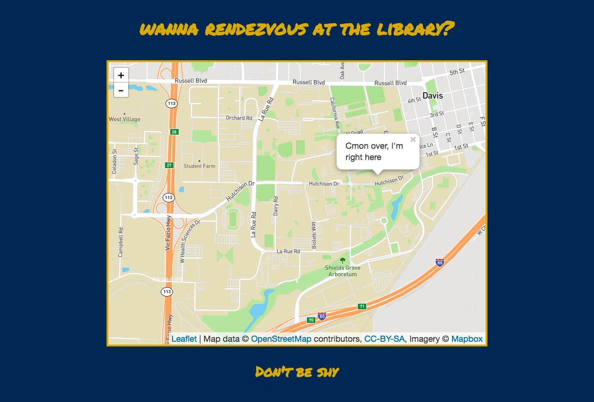
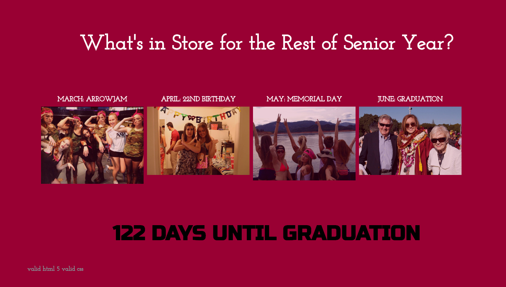
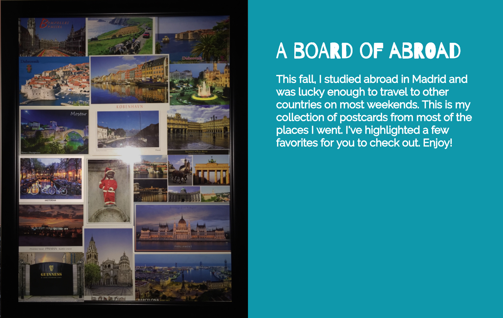

Studio 5 Blog
Evaluation of an External JS Library
February 21, 2017

My original design included "start" and "end" location but upon exploring Leaflet I decided to simplify it to a map of UC Davis with a location tag at the Peter J. Shields Library. Leaflet was pretty straightforward with latitude and longitude coordinates that create the boundary around the map. If I had more time, I would develop the user input buttons of "start" and "end" locations and create user icons where the user is and needs to go. It wouldn't be too hard to create a generic user icon but I chose to keep my interface as simple as possible, emphasizing the Leaflet library. Check out the Leaflet library for your own use!
Studio 4 Blog
Visual Effects of Interactive Design
February 14, 2017

My design for studio 4 uses four images to illustrate the next four months until graduation. The tips associated with each image activate upon hovering the image. Each image is at slight opacity so they have a reaction when the user interacts with them. At the bottom of the page, I created a countdown using Date() that shows the number of days until my inevitable graduation. I chose to make my timeline from images instead of a literal line but I may add a line with points. I felt the images made it more visually appealing instead of just a line, leaving the page with lots of empty space. The experience of my page is supposed to give the user a more personal look at my life and the events I am talking about.
Three things I do like about the design as effect user interface design are:
- Images that react to the user's mouse
- Intense, strong font for the impending countdown
- Constrasting colors for easy readability
Studio 3 Blog
Visual Aspects of Interface Design
February 7, 2017

I chose to use my picture frame full of postcards as my project base. This frame holds most of the locations I traveled on the weekends during my semester abroad. I wanted to use this item because it was such a special time in my life and I don't want to under-emphasize how freaking cool last fall was for me. Using javascript and CSS, I created a highlight for five of the postcards: Amsterdam, Budapest, Dublin, Dubrovnik and Valencia. Upon hovering over one of these five, the exposure increases and creates a glow. Upon clicking on it, a small paragraph blurb appears to the right with a description of why that city was so memorable.
One struggle I came across was making this site work with any monitor. Ideally, I would have placed my main image in the back and center on all four sides. However, by using the position:absolute feature to place the highlighted postcards, I cannot adapt it to all screen sizes. So I stuck it on the left and built my pixels based on a left margin. It still looks nice but definitely not as aesthetically pleasing as it could look.
Three things I do like about the design as effect user interface design are:
- Clean left margin of text makes legibility easy
- Hierarchy of size and fonts facilitates directing the user's eye.
- Creating a brightness around the postcards keep the flow of the original image constant and makes it easy for the user to find the triggers points
Studio 2 Blog
Evaluating User Input Forms
January 31, 2017

I purchase many outfits from tobi.com, an online-only clothing store that is relatively cheap and ships quickly aka perfect for a college student! When it comes to check out, some sites can be too long, or reset everything with the accidental click of one button, or just be truly unattractive. As far as Bill Derouchey's guidelines for interface design go, Tobi checks out.
Here's why: As far as hierarchy goes, Tobi uses color to highlight the important fields and using uniform coloring for the fields of equal importance. For example, the input boxes are white and the checkout button is black, drawing the user to the most important function on the page. Next, the clean black and white interface makes legibility and clarity high. It is a clean interface that allows the user to get from point A to point B as smoothy as possible. The interface does not display anymore advertisements or products that aren't relevant to checkout, making the process as straightforward and non-distracting as possible. The spacing is very clean, keeping the user's entries on the left and the static details on the right.
Learn more about interface design from everyday objects from Bill Derouchey's slideshow on interface design.
Studio 1 Blog
Analyzing Good User Interface Design
January 19, 2017

The Pintrest user interface is first foremost clean. The white background with the simple red p logo in the top left corner make for a simple layout that is content-focused. The large search bar makes it easy for the user to find exactly what their looking for without hunting for a small magnifying glass icon. The spacing between each post on Pintrest allows for good readability and visual spacing for the user to not feel overwhelmed. Simple san-serif fonts at good sizes and weights make each item uniform and easy to read. The hover feature over each piece of content gives the user a quick and easy way to form a board without entering each individual post.
When you want to access your personal profile, the icon of a head makes it easy to find. It lists your boards in the order they were created. On your mobile device, your latest pins and your common tags are the first thing you see, making it easy to continue your search for more items of one category. This is also much better access for a smaller screen.
Pintrest has been a great resource for its collectivity of everything in one space. The interace is clean and easy with great emphasis on the content and less on the text. I would recommend Pintrest for people of all ages and all tech-savvyness because of its easy usability.